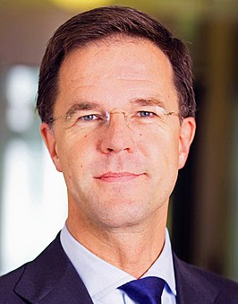
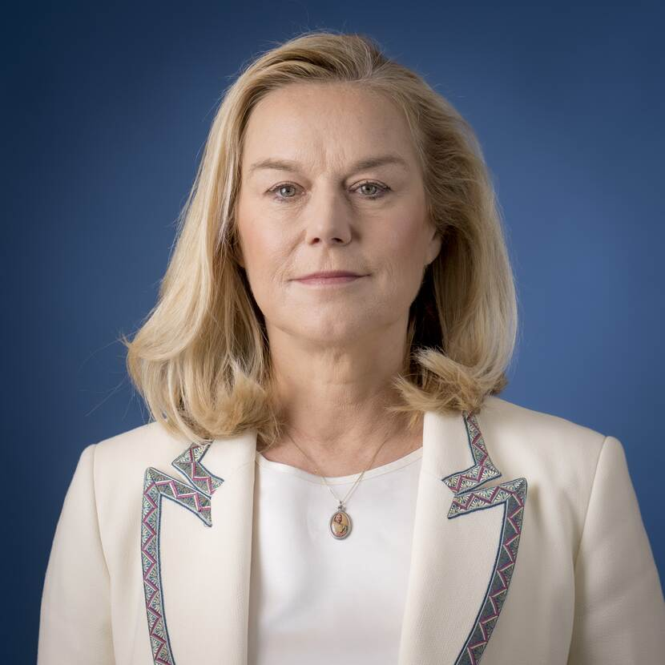

Mark Rutte (Den Haag, 14 februari 1967) is een Nederlands politicus. Sinds 14 oktober 2010 is hij minister-president van Nederland en minister van Algemene Zaken en daarmee de langstzittende minister-president in de Nederlandse geschiedenis. Hij is tevens politiek leider van de Volkspartij voor Vrijheid en Democratie (VVD).
Vice Minister president

Sigrid Agnes Maria Kaag (Rijswijk (ZH), 2 november 1961) is een Nederlandse politica en voormalig diplomaat. Namens Democraten 66 (D66) is zij sinds 10 januari 2022 eerste vicepremier en minister van Financiën in het kabinet-Rutte IV. Tevens is zij partijleider van D66.